Indiana Dunes National Park Travel Guide
National park located in northwestern Indiana runs for about 20 miles (32 km) along the southern shore of Lake Michigan and covers 15,349 acres (6,212 ha) of various acreage
General Information
Open year-round
Motorcycle (1–7 Days): $20
Individual Walk-in/Bicycle (1–7 Days): $15 per person
Indiana Dunes National Park Annual Pass: $45
America the Beautiful Annual Pass: $80
How to Get There
From Portage, IN (4 mi): Take US-20 east to IN-49, then head south on IN-49 to the Indiana Dunes Visitor Center at 1215 IN-49 in Porter, the primary gateway to Indiana Dunes National Park.
Overview
Indiana Dunes National Park stretches for about 15 miles along the southern shore of Lake Michigan in northwestern Indiana, protecting beaches, towering sand dunes, wetlands, prairies, and woodlands that survive between the steel mills and cities of the Chicago region. The park is one of the most biologically diverse in the system for its size, with more than 1,100 kinds of native plants, including oak savannas, prickly pear cactus, and rare bog plants, all growing side by side. Its beaches on the warm, shallow south end of the lake make it one of the Midwest's favorite summer destinations.
The area was authorized as a national lakeshore in 1966 after a long campaign by conservationists, and it became the 61st national park in 2019. Visitors come to swim and sunbathe on the beaches, climb dunes such as Mount Baldy and the Central Dunes, hike through forests and wetlands, watch birds, and see the Chicago skyline across the water. The park is only about an hour from Chicago, which makes it popular for day trips.
Park Sections
The park has many separate areas strung along the lakeshore, and Indiana Dunes State Park is a separate, adjacent park. To the west, West Beach in Gary has a long swimming beach and the Dune Succession Trail, and the Portage Lakefront and Riverwalk has a pier and lakefront views. In the middle are Mount Baldy, a large "living dune" that is slowly moving, the Dunewood Campground, the Bailly Homestead and Chellberg Farm, and the Dorothy Buell Memorial Visitor Center. Inland areas include Cowles Bog and Pinhook Bog, and the beach towns of Beverly Shores and Ogden Dunes lie between the sections. The Century of Progress homes at Beverly Shores are also part of the park.
Sightseeing and Exploring the Park
There is no single scenic drive, but the area can be explored by driving between the beaches, trailheads, and historic sites along US-12, State Road 49, and the lakeshore roads. Views include Lake Michigan from the dunes, the Chicago skyline on clear days, and the steel mills to the west. The Century of Progress Architectural District shows five experimental homes moved here from the 1933 Chicago World's Fair. The Bailly Homestead and Bailly Cemetery preserve a 1822 fur trading post. The Calumet Trail, a 9-mile paved path, runs along the south side of the park.
Hiking
The park has about 50 miles of trails of every level. The Dune Succession Trail at West Beach (about 1 mile) shows how the dunes change from beach to forest. The Cowles Bog Trail (about 4.7 miles) goes through wetlands and a beach, and the Pinhook Bog Trail is a short boardwalk through a rare quaking bog with pitcher plants. The Mount Baldy area offers a walk up the large dune to the lake, although climbing on the dune itself may be restricted, and the Miller Woods and Tolleston Dunes trails cross dune, forest, and wetland. Soft sand makes walking tiring in summer. Dunes ecosystems are fragile, so stay on marked trails.
Other Activities
Besides hiking, the park is known for swimming at beaches such as West Beach, where lifeguards are on duty in summer, as well as picnicking, fishing, kayaking, bicycling, horseback riding at the Dunewood area, birdwatching, camping, and ranger programs. In winter, cross-country skiing and snowshoeing are popular. The park is also a bird migration stop in spring and fall. There are no cave tours or commercial outfitters inside the park, but bike and kayak rentals are available in nearby towns. The Indiana Dunes State Park, next door, adds a pavilion and a trail to the tallest dune, Mount Tom.
Flora and Wildlife
The park's habitats include open beach, high dunes with marram grass, black oak savanna, prairie, bogs, and wetlands. Rare plants include prickly pear cactus, bearberry, and carnivorous pitcher plants in Pinhook Bog. Wildlife includes white-tailed deer, coyotes, foxes, beavers, and more than 350 species of birds, with migrating warblers and sandhill cranes in spring and fall, as well as turtles, frogs, and the endangered Karner blue butterfly. Birders also visit the Great Marsh and Heron Rookery. Viewing is on your own, and early morning is best.
Access
The park is in Porter, LaPorte, and Lake Counties in northwestern Indiana, about 50 miles southeast of downtown Chicago, a drive of roughly an hour, depending on traffic. It can be reached from I-94 and US-12 and State Road 49. The South Shore Line commuter train runs from Chicago's Millennium Station to stops at Dune Park, Beverly Shores, and Ogden Dunes, about 1.5 hours each way, with short walks or bike rides to the beaches. Chicago Midway and O'Hare airports are about 45 minutes to an hour away. South Bend is about an hour east.
Seasons
Summer is the busiest season, with warm water for swimming, lifeguards at West Beach, and crowds on weekends. Spring and fall are quieter, with migrating birds, wildflowers in spring, and fall colors in October. Winter is cold and windy, with snow, ice-covered dunes, and good conditions for cross-country skiing; the beaches are nearly empty. Some facilities, such as Dunewood Campground and beach services, are closed in winter, and bugs can be a problem in late spring and early summer. Check the National Park Service website for beach conditions and closures.
Camping and Lodging
Dunewood Campground in the park has about 66 sites and is open from spring to fall. The adjacent Indiana Dunes State Park has a larger campground of about 140 sites, and several private campgrounds are in the area. There is no lodging in the park. Nearby towns such as Chesterton, Portage, Valparaiso, and Michigan City have chain hotels, inns, and bed-and-breakfasts, and the historic town of Beverly Shores has a few small lodgings. Chicago, an hour away, has a wide variety of lodging.
Visitor Centers
The Dorothy Buell Memorial Visitor Center near Porter is the park's main visitor center, with exhibits on the dunes, a short film, a bookstore, and rangers who can advise on beaches, trails, and conditions. It is open year-round. The Paul H. Douglas Center for Environmental Education in Gary offers programs for school groups and visitors, and the West Beach contact station is open in summer. Hours vary by season, so check the National Park Service website.
This article uses material from the Wikipedia article "Indiana Dunes National Park", which is released under the Creative Commons Attribution-Share-Alike License 3.0. Additional information comes from the National Park Service Indiana Dunes National Park website.
Featured Locations and Trails
Jonathunder, CC BY-SA 3.0, via Wikimedia Commons; Image Size Adjusted

1933 Chicago Worlds Fair Century of Progress Homes
Collection of innovative model homes originally built for the 1933 Chicago World's Fair that showcased futuristic architecture, modern materials, and revolutionary residential design concepts.
Jonathunder, CC BY-SA 3.0, via Wikimedia Commons; Image Size Adjusted
Bailly Cemetery
Historic family burial ground featuring a distinctive walled cemetery that preserves the legacy of one of the earliest Euro-American settlement families in the region.
Jonathunder, CC BY-SA 3.0, via Wikimedia Commons; Image Size Adjusted
Chellberg Farm
Preserved nineteenth-century farmstead featuring historic buildings, agricultural landscapes, and exhibits that interpret the lives of Swedish immigrant farming families.
Jonathunder, CC BY-SA 3.0, via Wikimedia Commons; Image Size Adjusted
Mount Baldy
Towering sand dune offering a steep climb, panoramic views, and a unique landscape shaped by powerful winds along the southern shore of Lake Michigan.
Rock Harbor Area
Jonathunder, CC BY-SA 3.0, via Wikimedia Commons; Image Size Adjusted
Portage Lakefront and Riverwalk
Modern lakeshore recreation area featuring sandy beaches, scenic walking paths, birdwatching opportunities, and expansive views of Lake Michigan and the Portage waterfront.
Windingo Area
Jonathunder, CC BY-SA 3.0, via Wikimedia Commons; Image Size Adjusted
Tolleston Dunes
Expansive dune landscape featuring rolling sand formations, rare plant communities, and scenic trails that showcase the ecological diversity of the Lake Michigan shoreline.
Jonathunder, CC BY-SA 3.0, via Wikimedia Commons; Image Size Adjusted
West Beach
Popular beachfront destination featuring expansive sandy shores, towering dunes, picnic facilities, and scenic trails with sweeping views of Lake Michigan.
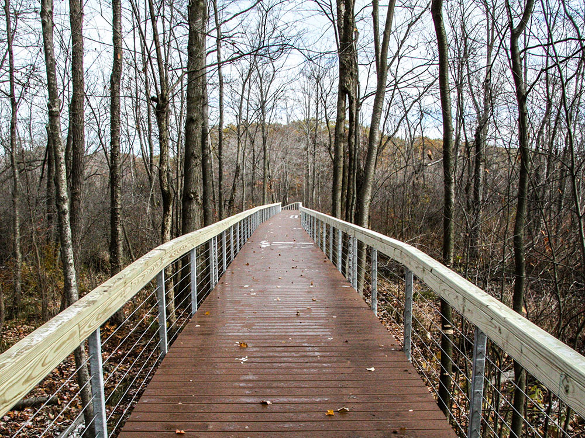
.jpg){kind=link}
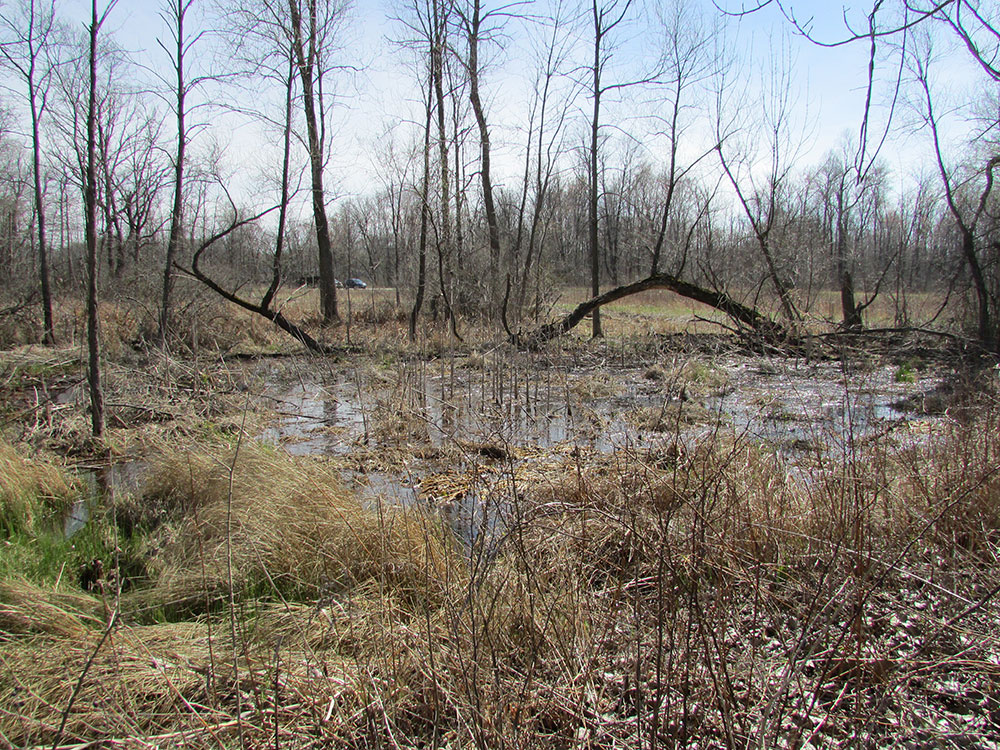

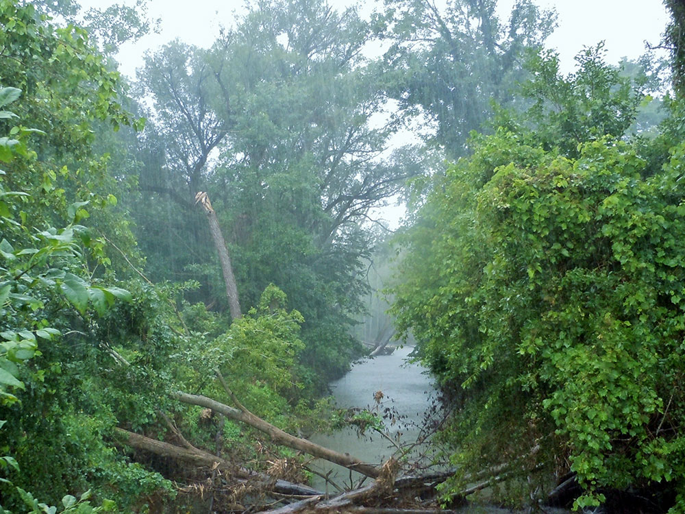

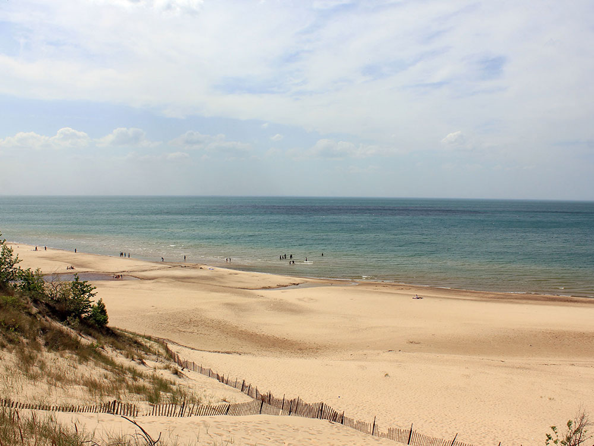

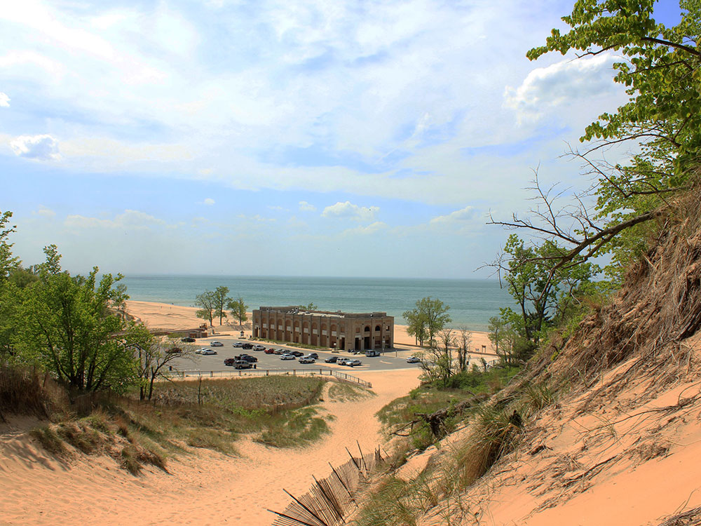

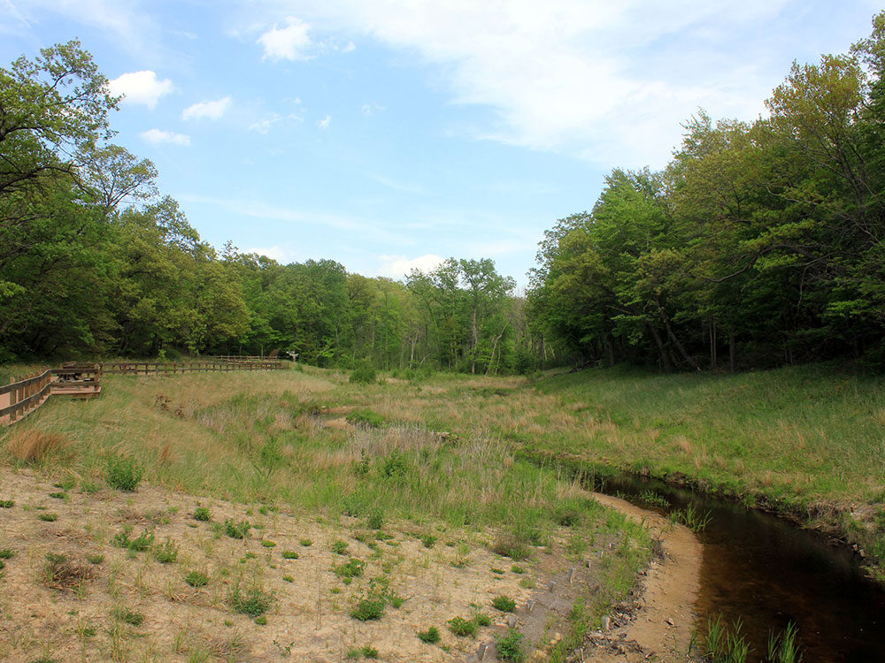

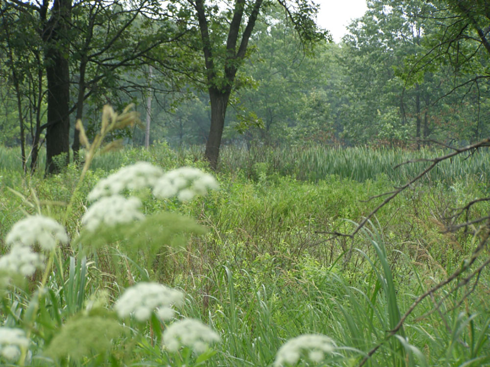

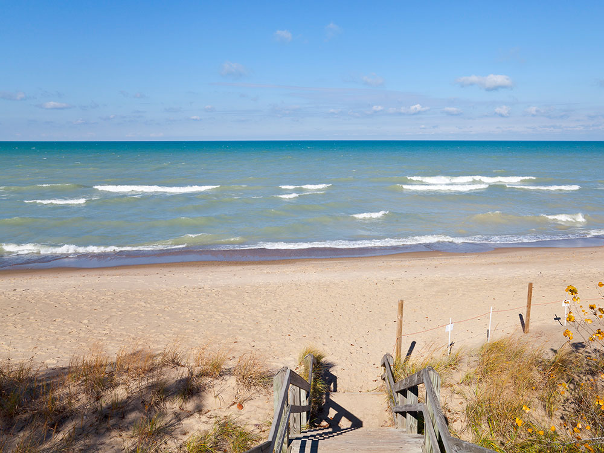

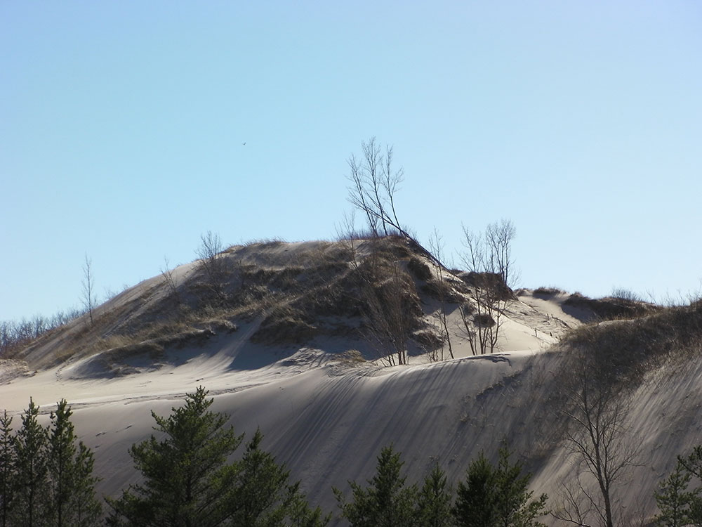

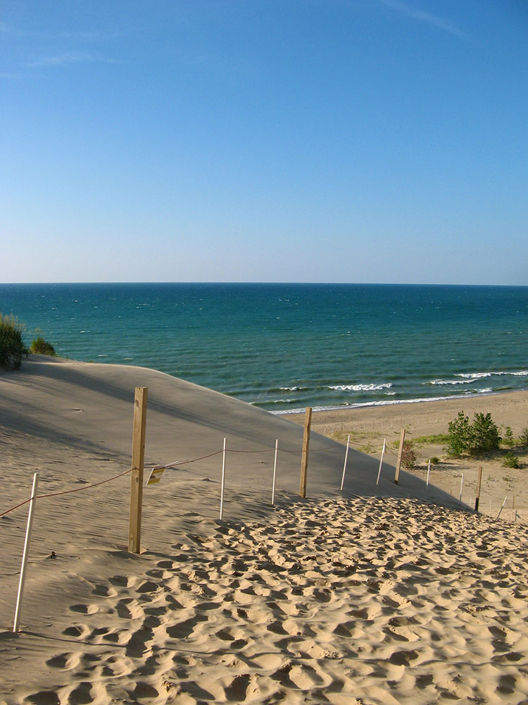

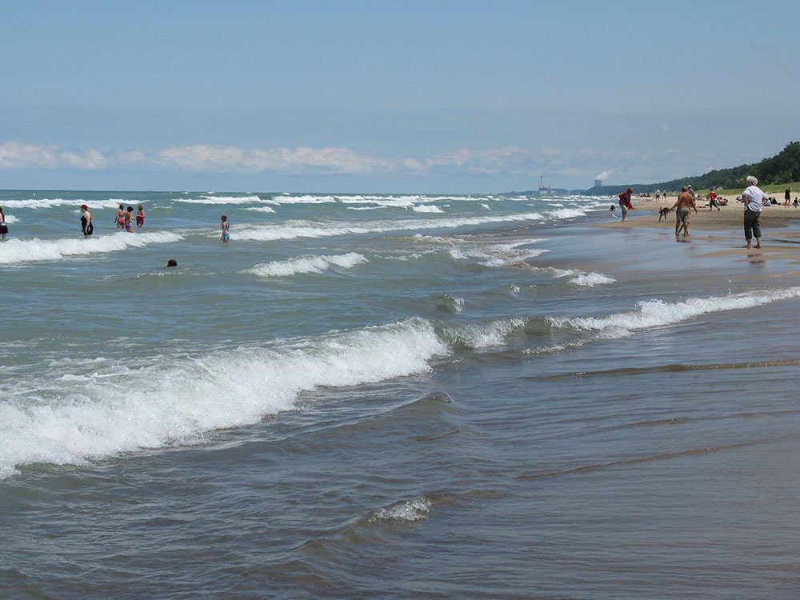